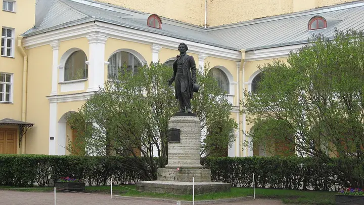

Фото: Alexander Ardatov, CC BY 3.0 · Wikimedia Commons
Музей · Центр
Музей-квартира Пушкина
Последняя квартира поэта у Конюшенной: кабинет, библиотека и история последней дуэли.
- ₽ · до 1 500 ₽ на человека
- Новое в каталоге
- в 1 плане
Позвать сюда: Музей-квартира ПушкинаОткрыть в каталоге: Музей-квартира ПушкинаМаршрут до места: Музей-квартира Пушкина
Адрес и детали
- Адрес
- наб. реки Мойки, 12
Открыть на Яндекс Картах (в новой вкладке) - Метро
- м. Адмиралтейская
- Район
- Центр
- Цена
- до 1 500 ₽ на человека
- Проверено
- работает — проверили в октябре 2026
Планы с этим местом 1
- Музей-квартира Пушкина · Музей · м. Адмиралтейская
- 3 минуты пешкомЧАО Какао · Какаочная
Кабинет и библиотека поэта у Конюшенной, а потом пара минут пешком — какаочная, где наливают густой горячий шоколад из окошка.
Открыть план: Квартира Пушкина и горячий шоколадПозвать сюда: Квартира Пушкина и горячий шоколад
Фото: Alexander Ardatov, CC BY 3.0 · Wikimedia Commons

Похожие рядом


Что ещё рядом
Как позвать
- Выбери план, место или событие — в карточке адрес, цены и маршрут в Яндекс Картах.
- Нажми «Позвать сюда» — соберётся приглашение-игра для свидания или голосование для компании.
- Отправь ссылку в любой мессенджер: тебе ответят, а компания отметит, куда и когда может. Бесплатно и без регистрации.